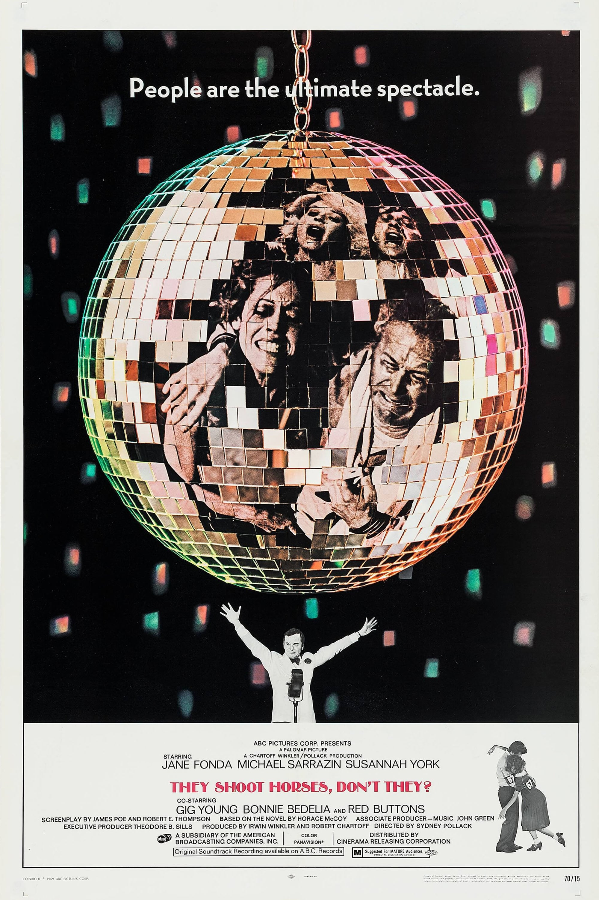

They Shoot Horses, Don't They?
42nd Academy Awards
(Oscars 1970)
9 Nominations, 1 Award
| Nominations | ||
|---|---|---|
| Category | Nominees | Result |
| Actress | Jane Fonda | Nominated |
| Actor in a Supporting Role | Gig Young | Won |
| Actress in a Supporting Role | Susannah York | Nominated |
| Directing | Sydney Pollack | Nominated |
| Writing (Screenplay--based on material from another medium) | James Poe and Robert E. Thompson | Nominated |
| Film Editing | Fredric Steinkamp | Nominated |
| Art Direction | Frank McKelvy and Harry Horner | Nominated |
| Costume Design | Donfeld | Nominated |
| Music (Score of a Musical Picture--original or adaptation) | Albert Woodbury and John Green | Nominated |